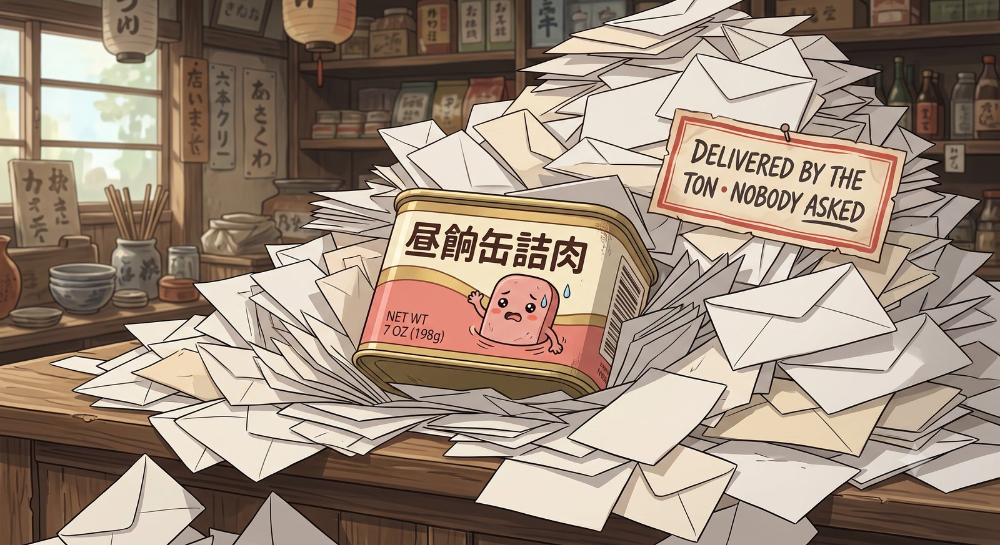
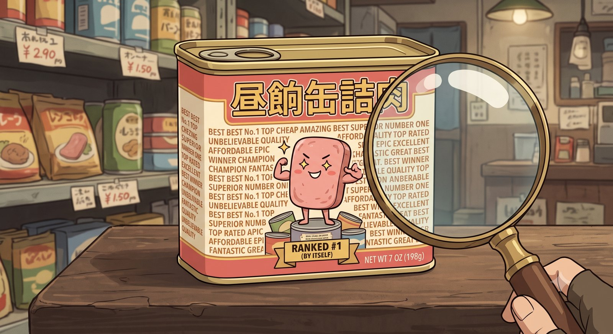
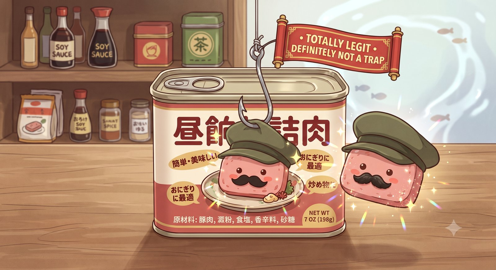
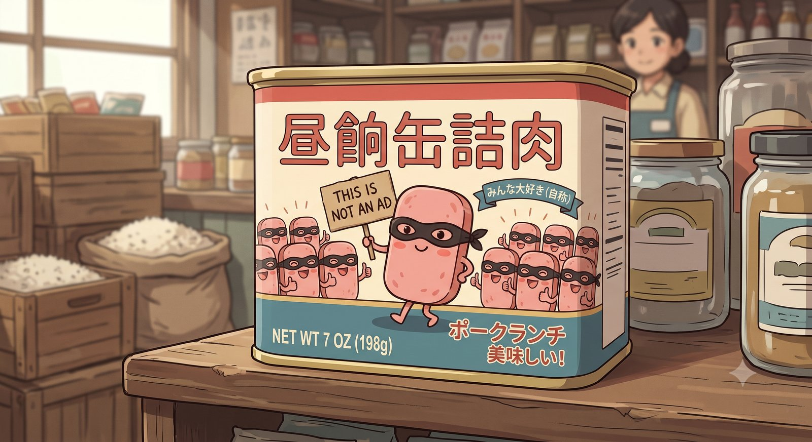
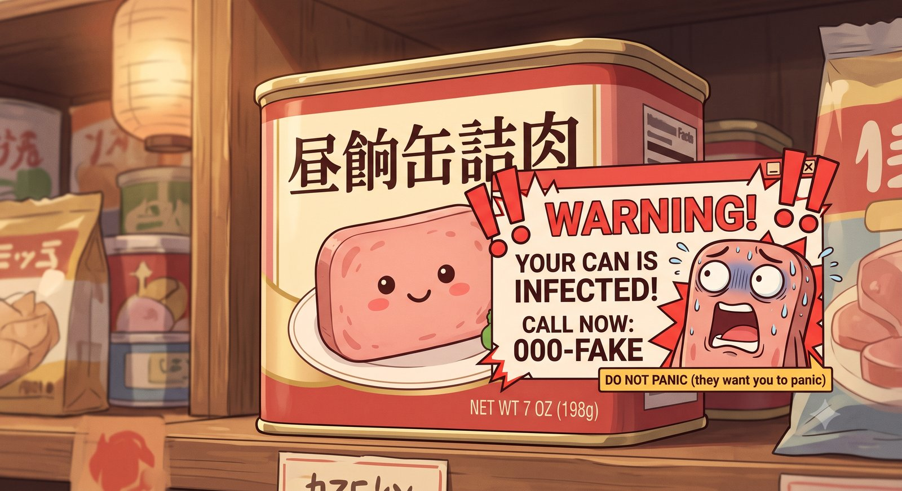
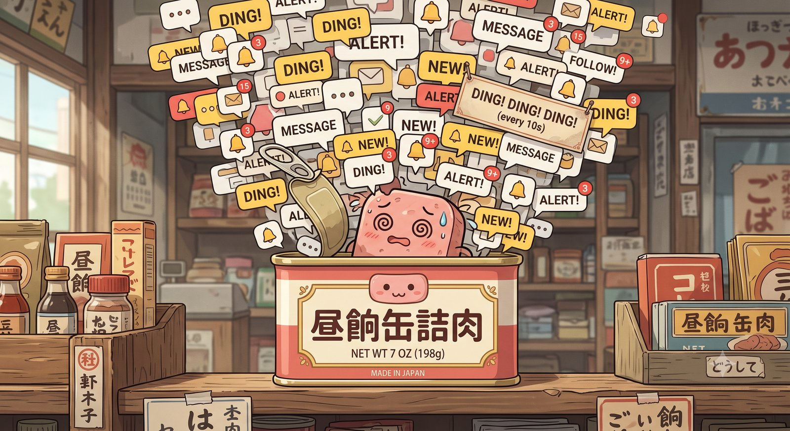

はじめる
下のボタンを押すと、通知の許可を尋ねます。許可すると、選んだ間隔で六種類の迷惑行為が缶の姿で届きます。焦らず眺めて、気になった通知（または下の棚の缶）をクリックすると、Wikipedia や IPA の解説へ飛びます。このサイトの通知は訓練用なので「止める」を押すと止まります（安全のため数分で自動的に止まります）。
待機中です。
通知そのものの見た目は、お使いの端末が決めます。缶の絵を大きく出せるかは環境しだいで、スマートフォンなどでは小さなアイコンだけになることもあります。缶をクリックして解説へ飛ぶ流れは、通知が出なくても下の棚から試せます。
迷惑行為の棚
-

メールスパム 誰も頼んでいないのに、封筒が山になって届く。 解説を読む → -

検索エンジンスパム 「最高・No.1」を自分で敷き詰めて、自称一位。 解説を読む → -

フィッシング 見え透いた付け髭で「絶対に罠じゃない」と誘う。 解説を読む → -

ステルスマーケティング 仮面で「これは宣伝ではない」と書いた札を掲げる。 解説を読む → -

サポート詐欺 「缶が感染しました！」と脅して、焦らせにかかる。 解説を読む → -

通知スパム このサイトで練習するもの。止め方が少しややこしい。 解説を読む →